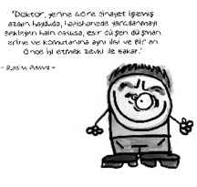

Rasim Adasal (1902 -1982)
Gülhane Askeri Tıp Akademisi Ruh ve Sinir Hastalıkları Kliniği profesörlüğü ve Ankara Tıp Fakültesi Ruh Hastalıkları Kliniği direktörlüğü yapmıştır. Ankara Üniversitesi Psikiyatri Kliniği’nin kurucusudur. Türkiye’de dinamik psikolojiye yönelişi başlatan kişidir. Psikiyatride ilk ekip çalışmasını gerçekleştiren uygulamaları da başlatan odur. Psikiyatrinin tüm halka mal edilmesine çalışmıştır.
Adasal, çevrenin ruh sağlığına etkilerini vurgulamış ve insanla kültürü arasındaki ilişkileri anlamadan ruhsal sorunların tedavisinin imkânsız olduğuna inanmıştır. Trafik kazaları, aşırı kalabalık ve gürültülü şehir hayatının beden ve ruh sağlığını etkilediğini ve bunlara bağlı olarak alkolizm, ilaç tutsaklığı, uyuşturucu alışkanlığı, psikolojik bozukluklar, intiharlar, cinayetler, kazalar ve bulaşıcı hastalıkların arttığını söylemiş ve bunlara çağdaş medeniyet hastalıkları adını vermiştir.
Romanları, filmleri, güncel olayları psikolojik yönden inceleyerek derslerini eğlenceli hâle getiren, Girit doğumlu olduğu için “şey” ve “yani efendim” kelimelerini çok kullanan ve şiveli konuşan Adasal, ders dışında da öğrencileriyle ilgilenmiştir.
1982 yılında İzmir’de vefat etmiştir.
